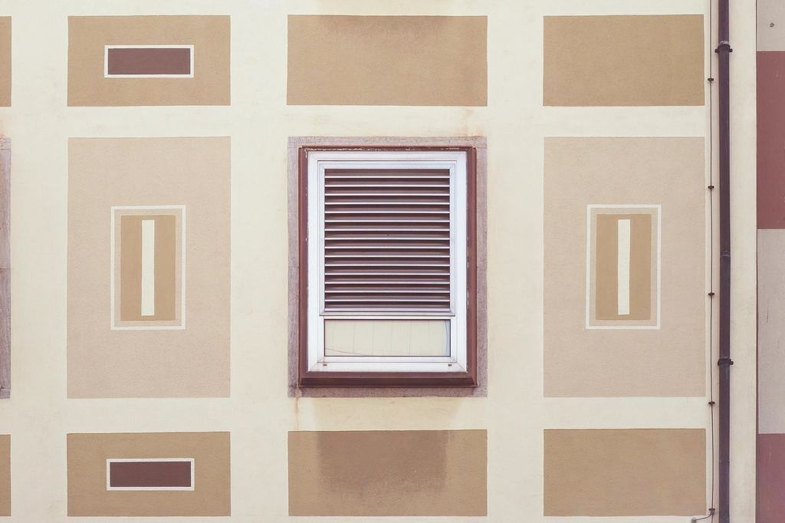

Priser
Tydliga priser utan överraskningar.
Pris per don, per halvdag eller per dag
Felsökning
När något drar, låter eller luktar.
6 900 krhalv dag inkl. rapport- Mätning av flöden och tryck
- Ljudmätning vid behov
- Skriftlig rapport med orsak
- Förslag på åtgärd
- Vanligast
Injustering per don
För nya och ombyggda anläggningar.
fr. 245 krper don- Varje don mäts och ställs in
- Inom ±5 % mot projekterat
- Protokoll klart för OVK
- Leverans inom tre dagar
Mätdag
Täthet, ljud eller injustering efter löpande behov.
11 900 krper tekniker och dag- Instrument kalibrerade årligen
- Fritt antal mätpunkter
- Protokoll eller rapport
- Resa inom Skaraborg ingår
Andra mättjänster
| Täthetsprovning, per provsträcka | fr. 3 900 kr |
|---|---|
| Ljudmätning, per rum | 1 450 kr |
| Injusteringsprotokoll i efterhand | 2 900 kr |
| Milersättning utanför Skaraborg | 38 kr/mil |
| Kvällsarbete, tillägg | + 30 % |
| Lägenhet, frånluft, per lägenhet | 695 kr |
Priserna anges utan moms och gäller företag och föreningar.
Mät, justera, mät igen
- 1

Ritning och flödeslista
Vi får projekterade flöden och ritningar och räknar ut antal don och dagar.
- 2

Fast pris i förväg
Pris per don eller per dag – ni vet kostnaden innan vi kommer.
- 3

På plats med instrumenten
Varje don mäts, justeras och mäts igen tills flödet ligger inom fem procent.
- 4

Protokoll inom tre dagar
Uppmätta och projekterade värden i ett protokoll som går direkt till OVK.
Varför behöver ventilationen injusteras?
För att varje rum ska få det flöde det är dimensionerat för. Utan injustering får rummen närmast aggregatet för mycket luft och de längst bort för lite.
Bygger ni också om ventilationen?
Nej. Vi mäter, justerar och skriver vad som behöver göras. Själva åtgärderna gör er installatör eller den ni väljer.
Hur lång tid tar en injustering?
En tekniker hinner i snitt 70 don per dag. En normal trappuppgång med 16 lägenheter tar en dag.
Godtas ert protokoll vid OVK?
Ja, våra protokoll följer branschens mall och används direkt av funktionskontrollanten.
Vad kostar en felsökning?
En halv dag med rapport kostar 6 900 kr exklusive moms. Hel dag 11 900 kr.
Arbetar ni utanför Skaraborg?
Ja, i hela Västra Götaland och Örebro län, med milersättning utanför Skaraborg.